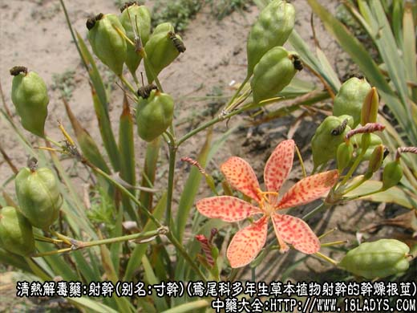
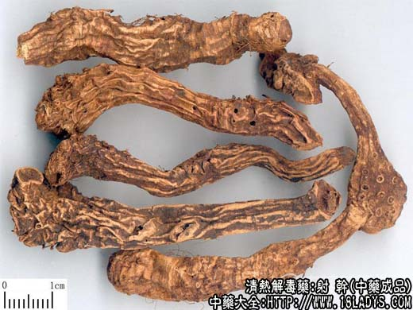
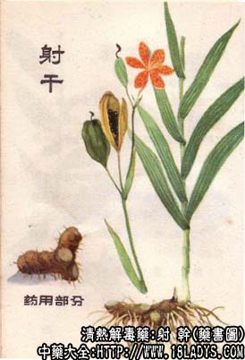

射干为少常用中药。《神农本草经》列为下品。
别名：寸干。
来源：为鸢尾科多年生草本植物射干的干燥根茎。野生。
产地：主产于湖北、河南、江苏、安徽，全国各地亦有分布。
性状鉴别：根茎呈不规则的结节状，有分歧，表面黄棕色。如采收加工干燥时经过火烧则呈灰褐色或棕褐色，并显烧焦的痕迹。表面粗糙皱缩。有不规则的环形皱纹和圆盘状茎痕或偶有短痉残留。常有未去尽的须根或由于须根脱落而形成的圆形小凹眼。质坚硬。断面黄色。气微、味苦。
以肥壮、无须根、质坚重、内色黄者为佳。
主要成分：含射干甙、鸢尾甙、芒果素、异射干英等。
功效与作用：1、清热、泻肺、利咽，其原理与消炎、利尿、祛痰等作用有关；2、抗真菌：对致病性皮肤癣菌有较强的抗菌作用。
炮制：切片，生用。
性味：苦、寒。
归经：入肺、肝经。
功能：清热解毒，消痰散结，散血消肿。
主治：痰热壅盛，咽喉肿痛，乳峨，痈肿疮毒。
临床应用：1、治外感咳嗽多痰，如为风热咳嗽，痰涎壅塞，可配前胡、杏仁、贝母；如为风寒咳嗽而多谈，呼吸不畅或有喘息，呼吸时喉中有哮鸣者，相当于慢性喘息性支气管炎，或支气管哮喘，可配麻黄、生姜、细辛、五味子以温化寒痰，方如射干麻黄汤。
3、治水田皮炎，用射干煎水1：20，加适量食盐，乘热温擦患部，可消炎止痒，使丘疹消退。
处方举例：射干麻黄汤《金匮要落》：射干6g、麻黄3g、生姜3g、细辛1.5g、五味子1.5g、紫苑9g、款冬花6g、制半夏9g、大枣4枚，水煎服。
注：四川以鸢尾科蝴蝶花（花菖蒲）的根茎称“士知母”，曾长期代射干使用，其形态与射干略似。唯体形稍显粗大而轻泡，内碴白色，效用与射干不同，应注意区别。